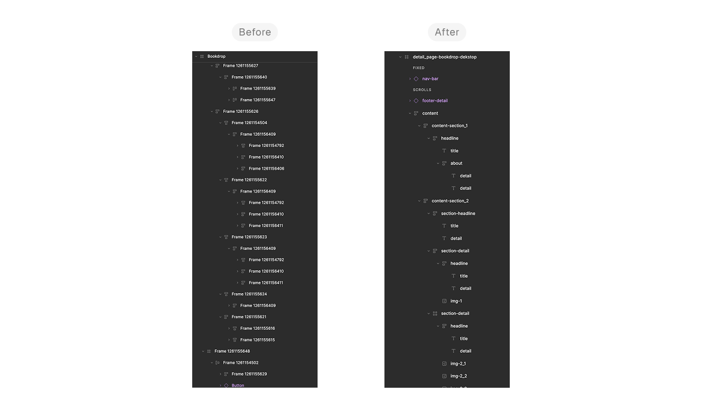
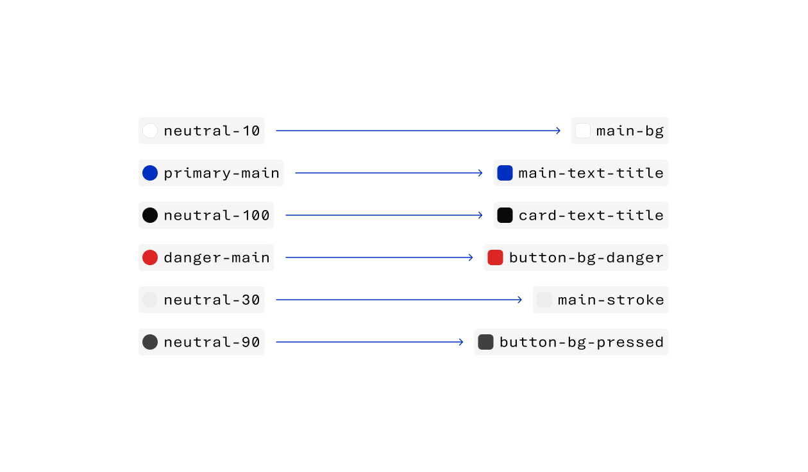
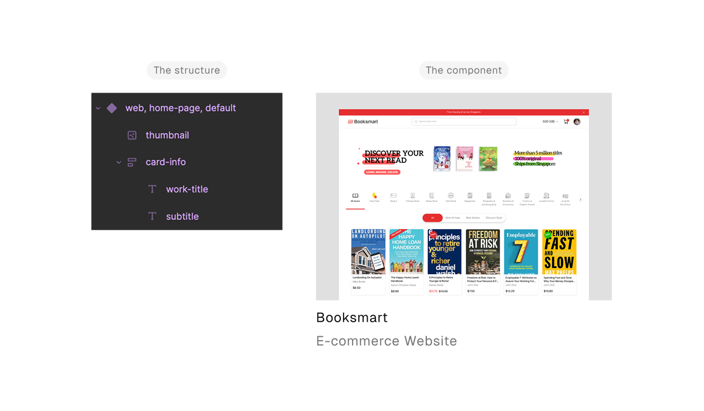
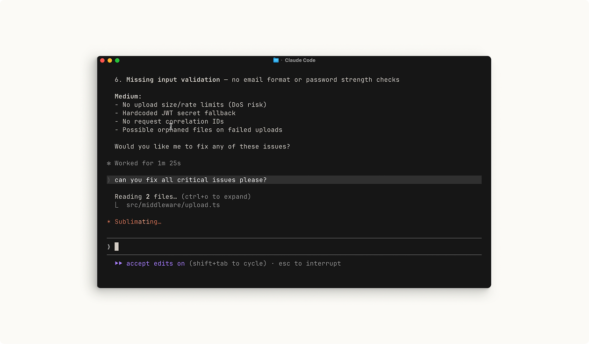
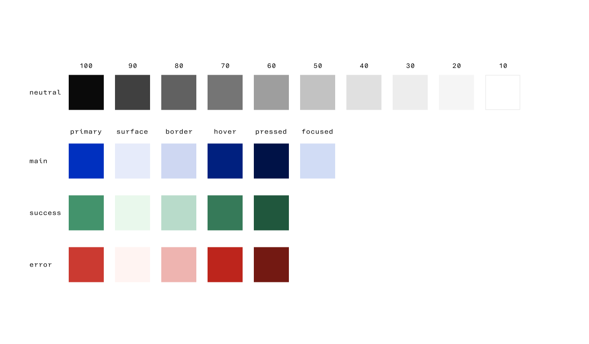

A Designer's First Attempt at Directing Agentic AI
AI’s growth over the past couple of years has quietly reshaped what design work looks like. Designers aren’t just handing off concepts anymore, they’re making ideas live faster than ever. Job listings have started saying it outright: AI in your workflow isn’t optional anymore. I picked up on this late, more than a year late, watching from the sidelines while everyone else seemed to already be moving.
I closed that gap with a course from Emil Kowalski, someone whose design perspective I trust. I went in unsure where a designer even fits into agentic AI. I came out understanding my role clearly, not as a coder, but as a director. Everything in this case study grew from that shift.
Figma as the Foundation. Still.
For the past 5 years, Figma’s been my daily driver. Auto-layout, variables, components — I thought I had it all figured out.
Turns out, “good enough for a developer” and “good enough for an AI” are two very different bars.
Here’s the thing, in every job I’ve had, handover was simple. I’d hand off a Figma file, maybe drop a few notes in Slack if something was unclear, and developers would just… figure it out. No strict naming conventions, no rigid structure. Human developers can infer context. They ask questions. They fill in gaps.
Agentic AI can’t do that. Not yet, anyway.
When I started working with Claude Code, I quickly realized my “good enough” files weren’t cutting it. The AI reads structure, not intention. So if a frame is named “Frame 47” instead of “Card - Pricing”, it’s already lost.
Naming that actually means something. Every layer, frame, and component got a name that describes what it is, not just what it looks like in the layers panel.

I used to name layers whatever Figma auto-generated. Turns out, that’s basically speaking gibberish to an AI trying to understand my design.
Variables, seriously this time. Colors, spacing, typography — all tokenized. Not just for consistency, but so the AI could pick up on patterns instead of guessing values.

I used to name colors like a spreadsheet. Now they read like sentences: main-bg-color, main-paragraph-color. Small shift, but it changed how accurately AI picked up my design intent.
Component hierarchy that makes sense. Nested components with clear parent-child relationships, so the logic behind the design is visible, not buried.

A clear hierarchy doesn’t just help developers. It gives AI the structural context it needs to understand your component logic.
Honestly? This process made me realize something a bit uncomfortable. I’d been getting away with messy handover for years simply because humans are good at filling gaps AI can’t.
Cleaning up for AI ended up cleaning up my process for everyone. With the files finally in shape, there was nothing left to prepare. Just the AI, my Figma file, and whatever came next.
First Encounter with Agentic AI
I’ll be honest, before diving in, I built up this whole scary picture in my head.
I’d watched people move fast with agentic AI, throwing around terminal commands and complex prompts like it was nothing. I expected the same for myself — messy trial and error, a steep learning curve.

Terminal-heavy workflows like this are what made me assume agentic AI meant speaking fluent developer. Turns out, it didn’t have to. (Screenshot from Claude Code 101, Claude Academy)
Instead, the first time I described what I wanted to Claude Code, it just… understood. Not perfectly, but enough that I never felt like I was shouting into a void.
That’s when things shifted. This wasn’t about becoming a coder overnight, it was about communicating clearly, just in a language I hadn’t used before.
Of course, it wasn’t completely smooth. There was a point where I asked for a specific animation behavior, and what came back wasn’t quite what I pictured. The timing felt off, not matching the interaction I had in mind. Instead of giving up or assuming it couldn’t be done, I broke it down: showed a reference, described the easing I wanted, compared it side by side. A few iterations later, it clicked.
That small hiccup taught me something bigger, being the orchestrator meant I still had to know what “right” looked like. The AI could execute, but I still had to recognize when something was off, and be specific enough to guide it there.
Turns out, the scariest part wasn’t the tool. It was my own assumption that I didn’t belong in this workflow yet.
Being an Orchestrator. Not a Coder.
That first win didn’t mean I’d figured everything out, it just meant I’d figured out my role. There’s a version of “AI-assisted design” that sounds like magic, describe what you want, and it just appears. That’s not quite what happened here. The clearest way I can explain my role: I decided what needed to happen, Claude Code figured out how to make it happen in code. But “how” still needed my input, over and over.
Color, for instance, was never up for negotiation. Every shade, every contrast decision that stayed fully mine. Claude Code implemented it, but the craft itself was untouched by AI. That’s not a limitation of the tool; it’s a boundary I set on purpose. Some decisions are design decisions, full stop.

Every shade, every state decided by hand. This is what “fully mine” actually looks like.
I had a specific interaction in mind, something snappy, not abrupt. First attempt from Claude Code was technically correct, but too linear, missing the bounce I pictured. So I broke it down like I would with a developer: showed a reference, described the easing in plain language, compared side-by-side. A few rounds later, it matched.
That loop, describe, generate, compare, and refine became the actual workflow. Not one prompt and done. More like a conversation where I kept saying “closer, but not quite” until it was.
Being the orchestrator meant I still had to know what “right” looked like. AI could execute fast, but it couldn’t read my taste. That part stayed on me, every single time.
Outcome
Two weeks, that’s how long it took from picking up the course to having this website live. Being the orchestrator that’s the foundation I walked away with. Not writing code myself, but steering agentic AI toward the concept I actually envisioned, correcting it when it gets things wrong, the same way I would with any collaborator. It didn’t replace how I used to work, the Figma discipline, the design instincts, all of it still matters, just pushed to a higher level.
Right now, I’m already using this to turn my own design ideas into something live. And I’m just getting started figuring out how far I can take it.